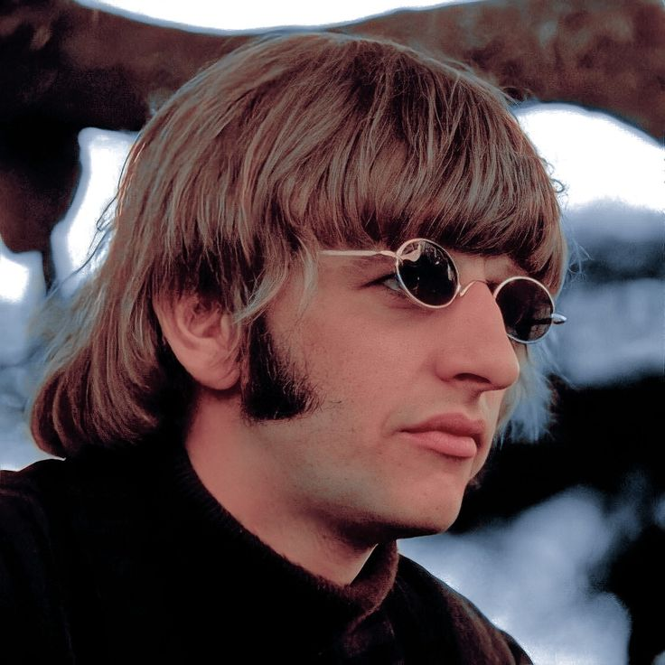
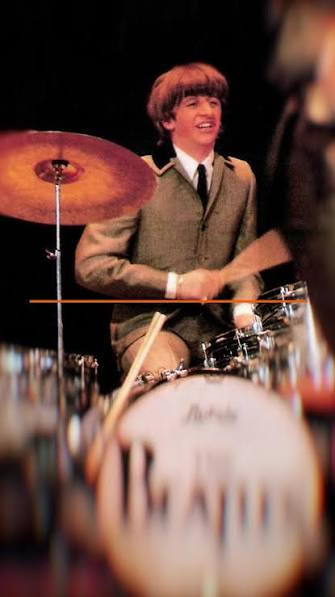

Ringo Starr
Baterista, cantor, compositor e a batida inconfundível dos Beatles.

Primeiros Anos e Infância
Sir Richard Starkey, conhecido mundialmente como Ringo Starr, nasceu em 7 de julho de 1940 em Dingle, uma área trabalhadora de Liverpool, Inglaterra. Sua infância foi marcada por sérios problemas de saúde, incluindo apendicite e tuberculose, que o levaram a passar longos períodos internado em hospitais.
Foi justamente durante uma de suas internações que Ringo teve seu primeiro contato com instrumentos percussivos, integrando a banda do hospital para entreter os pacientes. Esse interesse inicial transformou-se em paixão e, no final dos anos 1950, ele já marcava presença na efervescente cena musical de Liverpool.

A Era Beatles
Antes de se juntar aos Beatles, Ringo era um baterista consolidado na banda Rory Storm and the Hurricanes. Em agosto de 1962, foi convidado para substituir Pete Best, completando a formação definitiva do quarteto ao lado de John Lennon, Paul McCartney e George Harrison.
Com seu estilo único de tocar — canhoto tocando em um kit para diestros —, Ringo trouxe uma métrica sólida, groove inconfundível e criatividade para as composições da banda. Além de baterista, ele emprestou seus vocais para clássicos inesquecíveis como "Yellow Submarine" e "With a Little Help from My Friends", e compôs faixas marcantes como "Octopus's Garden".

Carreira Solo e Reconhecimento
Após o fim dos Beatles em 1970, Ringo lançou uma bem-sucedida carreira solo com sucessos como "Photograph", "You're Sixteen" e "It Don't Come Easy". Em 1989, fundou a Ringo Starr & His All-Starr Band, um supergrupo itinerante que se apresenta ao redor do mundo até os dias de hoje.
Reconhecido como um dos bateristas mais influentes da história do rock, Ringo foi induzido duas vezes ao Rock and Roll Hall of Fame (como membro dos Beatles e como artista solo) e recebeu o título de Cavaleiro do Império Britânico (Sir) em 2018. Sua mensagem permanente continua sendo a mesma: "Peace & Love" (Paz e Amor).